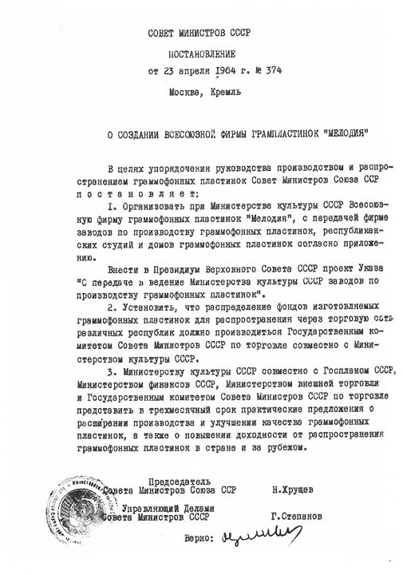

«Мелодия» объединила всесоюзную и периферийные студии грамзаписи, заводы по производству грампластинок, оптовые торговые базы, Дома грампластинок и стала осуществлять централизованное руководство творческими и промышленными предприятиями и организациями, находящимися в её ведении. Генеральным директором был назначен Николай Иванович Мохов, первым заместителем — Борис Давидович Владимирский. Главное управление располагалось в Москве на Тверском бульваре, дом 24.В состав фирмы в разные годы входили заводы в Москве, городах Апрелевке Московской области, Ленинграде, Риге, Тбилиси, Ташкенте, Баку, Таллине. В производстве грампластинок использовались в основном фонограммы, записанные во Всесоюзной студии грамзаписи (ВСГ) и других студиях фирмы. По состоянию на конец 1965 года, звукозаписывающие (творческие) студии «Мелодии» располагались в Москве, Ленинграде, Риге (с филиалом в Таллине), Вильнюсе, Ташкенте, Алма-Ате и Тбилиси. Позже (не позднее 1977 года) в состав фирмы были включены студии в Новосибирске и звукозаписывающие участки в Киеве и Ереване. Студии осуществляли записи только на магнитную ленту, которая затем отправлялась в ВСГ для производства эталона грампластинки.
Центральной студией «Мелодии» стала ВСГ, определявшая планы записей, отбиравшая репертуар и исполнителей. ВСГ монопольно изготовляла эталоны записей на специальных дисках и никелевые оригиналы грампластинок для заводов страны, подготавливала и издавала каталоги грампластинок, аннотации к записям, ежеквартальные бюллетени новых записей. Грамзаписи, сделанные ВСГ и другими студиями, неоднократно получали гран-при Французской академии грамзаписи им. Шарля Кро и другие международные премии.«Мелодия» выпускала грампластинки формата миньон, суперминьон , гранд (в том числе шеллачные) и гигант; часть форматов выпускалась цветными и гибкими . Скорость проигрывания грампластинок: 78 (суперминьоны, гранды), 33 и 45 об./мин. Часть грампластинок выпускалась по заказу конторы «Союзинвентарь», часть матриц предоставлялась для печати под этикетками других организаций: «Бюро пропаганды советского киноискусства», «Всесоюзное театральное общество» (ВТО), «Международная книга», «Интурист». Экспортные грампластинки выходили с надписями на латинице, в оформлении, как правило, отличном от грампластинок для внутреннего рынка.
